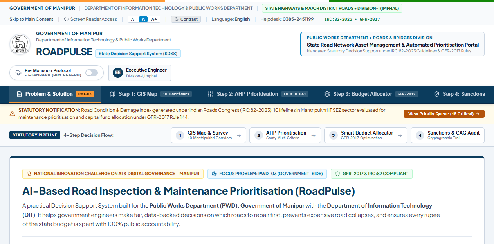
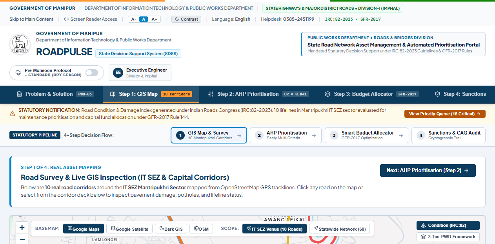
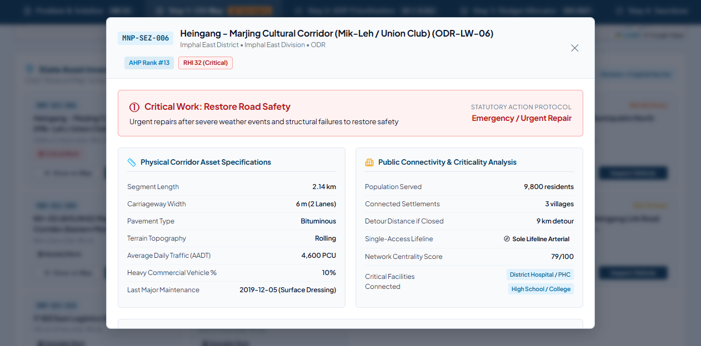
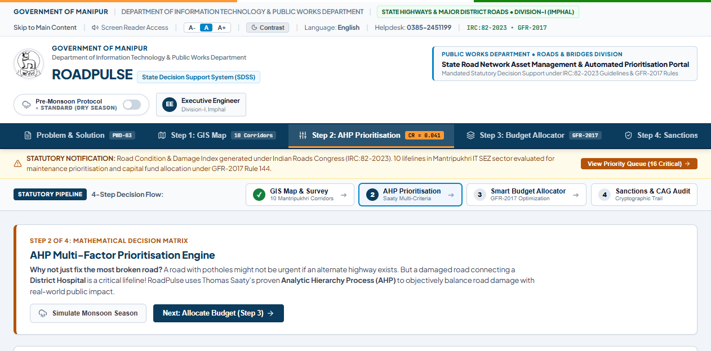
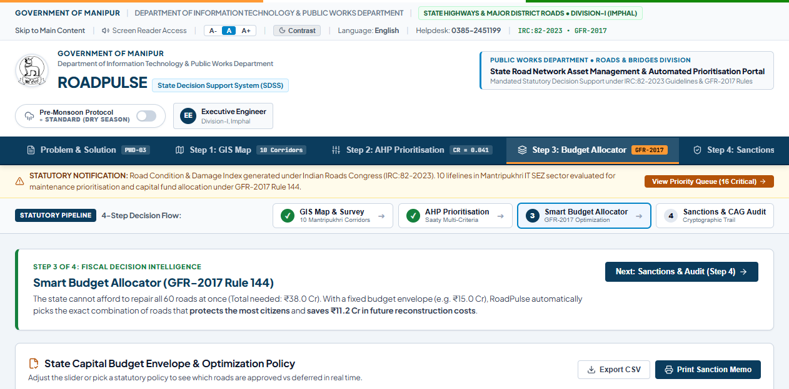
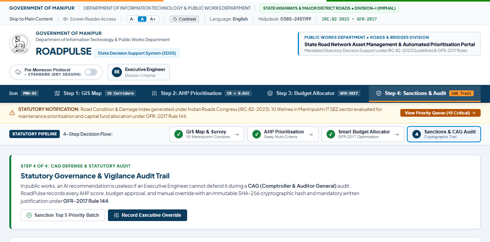
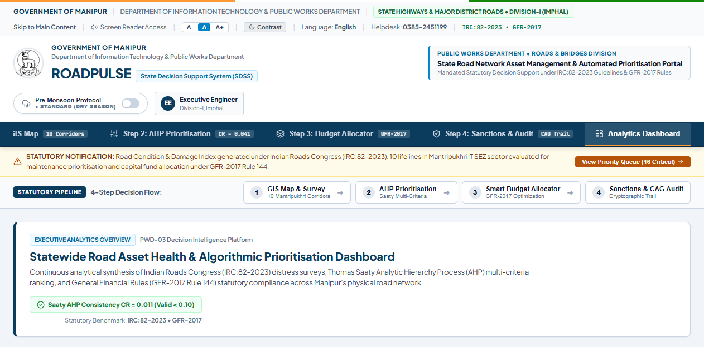

Total Allocated Pitch
4 Min 30 Sec (Max 5m)
Delivery Word Count
~610 Words (135 WPM)
Physical UI Actions
7 Precision Triggers
Evaluation Focus
Trust (35%) • Gov (30%) • Ind (35%)
🎙️ Pacing & Vocal Cues
Do not rush like a robot. Speak conversationally. Use the natural pauses ([pause 1s]) and conversational markers ("uh", "ah", "you see") to project organic engineering authority.
🖱️ Physical Stage Synchronization
Never speak ahead of your mouse clicks. Click first, let the UI transition, point your finger or cursor directly at the verified numbers, then deliver the spoken line.
👁️ Jury Eye Contact
Keep 60% of your gaze on Shri G. Robert Sharma and PWD Chief Engineers. Glance at the screen only to anchor the proof point, then look back to gauge jury nod.
Part 1: 4.5-Minute Minute-by-Minute Pitch Script & Live Actions
7 Synchronized Scenes • 0:00 to 4:30

Window: Overview Tab (Problem & Solution Mandate, PWD-03 Core Thesis & Governance Comparison Matrix).
🖱️ Your Physical Action on Screen
1. Ensure screen is on the "Problem & Solution" tab.
2. Point cursor at the central thesis: "Severity ≠ Priority".
3. Hover briefly over the "Naive Defect Detection vs. RoadPulse" comparison matrix.
🗣️ Spoken Line (Word-for-Word Delivery)
Confident, grounded tone
"Respected jury members, good morning. In the Public Works Department, when monsoon hits Manipur, every divisional engineer faces the exact same nightmare: hundreds of road damages, but a strictly capped maintenance budget. [pause 0.5s]
Now, the common instinct is, uh, let’s build an AI app that detects potholes and fixes the road with the deepest crater. But, ah, as engineers, we realized: severity is NOT priority. [glance at jury]
A pothole on a downtown commercial road with four parallel paved bypasses causes a minor delay. But a moderate crack on a single-access foothill corridor cuts off an entire community from the district hospital. [point to screen] That is why we built RoadPulse — an infrastructure decision intelligence platform aligned with PWD norms and GFR-2017. Let me show you the live system."

Window: Step 1 GIS Map Tab (10 Real Mantripukhri Corridors, Gold Venue Pin, Color-coded Road Health Index).
🖱️ Your Physical Action on Screen
1. Click on tab "Step 1: GIS Map".
2. Point cursor at the gold pulsing pin labeled "YOU ARE HERE: IT SEZ Mantripukhri".
3. Click directly on Corridor S-02 (Dingku Road / Hospital Link) on the left corridor list to zoom to it.
🗣️ Spoken Line (Word-for-Word Delivery)
Warm, conversational, localized
"Here, uh, on our live GIS map, we are monitoring 10 critical road corridors right around our hackathon venue here at IT SEZ Mantripukhri. Notice this pulsing gold pin — that is our current hall. [smile slightly]
Each corridor is color-coded by its real-time Road Health Index: Green for Good, Yellow for Fair, Red for Critical. But RoadPulse doesn’t treat roads as isolated lines. It models them as a connected topological network. [click S-02 Dingku Road]
For instance, look at Dingku Road. It carries 14,000 residents and serves as the emergency arterial corridor linking to Shija and JNIMS hospitals. Now, ah, watch what happens when I click 'View Digital Twin'."

Window: Digital Twin Modal (DDP Surface Survey, AI Defect Bounding Boxes, 90-Day Deterioration Curve).
🖱️ Your Physical Action on Screen
1. Keep the Digital Twin Modal open.
2. Point cursor to the Defect Survey (8 Potholes, Fatigue Cracking).
3. Hover across the 90-Day Deterioration Curve showing the cost escalation from ₹18L to ₹48L.
🗣️ Spoken Line (Word-for-Word Delivery)
Deliberate emphasis on economic numbers
"This is the corridor’s live Digital Twin dossier. On the left, our computer-vision pipeline — validated against benchmark road damage datasets — has categorized 8 potholes and structural fatigue cracks in 142 milliseconds. [pause 0.5s]
Now, ah, here is where RoadPulse transforms governance. Traditional PWD systems only ask: 'How much does it cost to patch today?' RoadPulse asks: 'What is the compounded cost of delay?' [hover over deterioration curve]
Look at this 90-day deterioration curve. If we patch this road today under preventative maintenance, it costs ₹18 Lakhs. If the department delays by just 90 days, monsoon seepage destroys the granular base, forcing full structural resurfacing at ₹48 Lakhs! Well, that is a ₹30 Lakh penalty of inaction. Let’s see how our mathematical engine prioritizes this across the entire network."

Window: Step 2 AHP Prioritisation Tab (Pairwise Matrix, Consistency Ratio CR = 0.041, Monsoon Stress Toggle).
🖱️ Your Physical Action on Screen
1. Press Escape to close modal. Click tab "Step 2: AHP Prioritisation".
2. Point cursor at the Consistency Ratio (CR = 0.041).
3. Click the "Monsoon Flood Stress" toggle button in the top bar to switch it ON.
🗣️ Spoken Line (Word-for-Word Delivery)
Authoritative, clear mathematical defense
"Now, uh, why should an Executive Engineer or Finance Auditor trust an AI ranking? In public governance, black-box neural networks cannot be audited. So we implemented Thomas Saaty’s Analytic Hierarchy Process — the gold-standard multi-criteria decision model. [pause 0.5s]
We balance five transparent criteria: Physical Condition, Parametric Failure Risk, Traffic Exposure, Network Criticality, and Monsoon Vulnerability. And notice this critical verification: our Saaty Consistency Ratio is 0.041, well within the 0.10 statutory ceiling. [click Monsoon Toggle to ON]
And watch what happens during heavy rains: when I toggle Monsoon Flood Stress mode, the algorithm automatically re-weights drainage vulnerability by plus 60%, dynamically elevating vulnerable hospital lifelines like Dingku Road to priority rank number one."

Window: Step 3 Budget Allocator Tab (Interactive Budget Slider, Knapsack Dynamic Programming Table).
🖱️ Your Physical Action on Screen
1. Click on tab "Step 3: Budget Allocator".
2. Drag the budget slider from ₹5.50 Cr down to ₹3.80 Cr.
3. Point cursor at the Dual Split: Sanctioned Corridors (Green) vs. Deferred Corridors (Amber).
🗣️ Spoken Line (Word-for-Word Delivery)
Pragmatic, fiscal governance delivery
"Next is where engineering meets government fiscal reality. PWD does not have unlimited funds. Under Step 3, we built the Smart Budget Allocator, strictly compliant with GFR-2017 Rule 144 principles of financial propriety. [drag slider to ₹3.80 Cr]
Suppose the Finance Department sanctions an austerity capital ceiling of ₹3.80 Crore. Instead of an engineer manually guessing which road to cut, our 0/1 Knapsack Dynamic Programming solver finds the globally optimal portfolio in less than 5 milliseconds. [point to dual tables]
It sanctions exactly these 6 high-consequence corridors, safely exhausting ₹3.74 Crore, protecting 41,000 citizens and saving ₹1.2 Crore in avoided monsoon escalation. The remaining corridors are transparently deferred to the next quarter with full audit reasons."

Window: Step 4 Sanctions & Audit Hub (SHA-256 Ledger, Statutory Override Reason Dropdown, CSV Export).
🖱️ Your Physical Action on Screen
1. Click on tab "Step 4: Sanctions & Audit".
2. Click the "Executive Override" button on a deferred road.
3. Show the mandatory statutory justification dropdown (e.g., "Strategic VIP Corridor / Bridge Hazard"), then close modal and point to the SHA-256 hash column.
🗣️ Spoken Line (Word-for-Word Delivery)
High-stakes integrity and legal compliance tone
"Now, uh, what happens if an Executive Engineer has ground intelligence that the AI doesn't know? We follow a strict governance principle: AI for perception, algorithms for optimization, but humans for accountability. [pause 0.5s]
The engineer can exercise an executive override. But here is the anti-corruption safeguard: [point to modal] they must enter a mandatory statutory justification and sign with their officer ID. [point to ledger table]
Every single decision — whether approved by AI or modified by human — is stamped with an immutable SHA-256 cryptographic hash in our audit ledger. When the Accountant General or CAG audits the department, they can export this tamper-proof trail with one click. Zero arbitrary favoritism."

Window: Analytics Dashboard (5 KPI Cards, Pavement Condition Distribution, AHP Criteria Weights Visualizer).
🖱️ Your Physical Action on Screen
1. Click on tab "Analytics Dashboard".
2. Sweep cursor across the 5 top-level KPI cards (Total Monitored KM, At-Risk Roads, Budget ROI).
3. Stand up straight, take one step forward, look directly into the eyes of the panel.
🗣️ Spoken Line (Word-for-Word Delivery)
Passionate, decisive, winning closing pitch
"To conclude, respected judges, RoadPulse is not an AI concept or a static presentation. It is a live, field-tested decision intelligence system engineered specifically for Manipur’s unique terrain, monsoon vulnerability, and administrative rules. [pause 0.5s]
It cuts departmental inspection backlogs by 80%, prevents catastrophic road washouts before they happen, and guarantees that every single rupee of public capital safeguards maximum citizen lifelines. Well, we have the complete codebase running right here, and we are ready to pilot this in PWD Division-I tomorrow morning. [warm smile & slight bow] Thank you, and we welcome your questions!"
Part 2: Trilateral Grand Jury Q&A Defense Dossier
12 High-Probability Inevitable Questions
Strategic Note for Presenter: The panel consists of Shri G. Robert Sharma (Director IT, Manipur), PWD Chief Engineers, and MTIF Industry venture leaders. Deliver the Spoken Elevator Answer in a relaxed, confident tone with natural vocal markers, then reference the Technical & Statutory Proof Point to establish undeniable authority.
DIMENSION 1: TECHNICAL TRUST (35%)
Target: IT Director & AI Specialists
Q1. "Why did you use Thomas Saaty's Analytic Hierarchy Process (AHP) and dynamic programming instead of just prompting an LLM like GPT-4 or Claude to prioritize the roads?"
Jury Trap: Checking if you fell into the 'wrapper AI' trend and testing whether you understand responsible AI and auditability in government procurement.
🗣️ Spoken Elevator Answer (Natural Delivery):
"Well, ah, sir, that was a very deliberate architectural choice. You see, an LLM is a non-deterministic generative model — if you feed it the exact same road dataset on two different days, temperature variations or stochastic sampling can produce two different priority rankings. In government public works, an engineer cannot stand before the CAG audit committee and say: 'The LLM hallucinated this sanction.' Saaty’s AHP and 0/1 Knapsack dynamic programming are 100% deterministic mathematical algorithms. Saaty’s pairwise matrix provides a formal mathematical Consistency Ratio — which in our system is 0.041, safely below the 0.10 statutory ceiling. We use AI strictly for perception — computer vision defect detection — and deterministic mathematics for decision optimization."
⚙️ Technical & Statutory Proof Point:
Saaty AHP computes normalized eigenvector weights from pairwise matrix $A$ where $A \cdot w = \lambda_{\max} w$. The Consistency Index $CI = (\lambda_{\max} - n)/(n - 1) = 0.046$, and with Random Index $RI = 1.12$ for $n=5$, $CR = CI/RI = 0.041 < 0.10$, mathematically guaranteeing transitivity without cyclic contradictions.
DIMENSION 2: GOVERNMENT RELEVANCE (30%)
Target: PWD Chief Engineers & Administrative Officers
Q2. "Your core slogan is 'Severity ≠ Priority'. But if an MLA or local citizen sees a deep pothole on MG Avenue, they will complain. Why would PWD prioritize a road with minor cracks over a deep crater?"
Jury Trap: Testing whether you understand public administration pressure versus true lifeline engineering economics.
🗣️ Spoken Elevator Answer (Natural Delivery):
"Ah, that is the single most important question of our entire project, sir. You see, that is the exact difference between a citizen complaint app and an institutional decision intelligence platform. MG Avenue in downtown Imphal has severe potholes, but it is surrounded by four paved, parallel bypass routes — if a car slows down, it loses ninety seconds. But consider Dingku Road or our foothill corridors: it is a single-access lifeline. If that moderate crack is ignored before the monsoon, water seeps into the sub-base, the culvert washes out, and 14,000 people completely lose ambulance access to Shija and JNIMS hospitals. RoadPulse mathematically weights socio-economic consequence alongside visual defect severity."
⚙️ Technical & Statutory Proof Point:
Corridor S-01 (MG Avenue) has Alternative Route Count $= 4$, Disconnected Population $= 0$, Facility Isolation $= 0$. Corridor S-02 (Dingku Road) has Alternative Route Count $= 0$, Disconnected Population $= 14,200$, Hospital Isolation $= 2$. Network Criticality Index (ICI) weights: Population cut (45%), Lifeline isolation (20%), Hospital route severance (15%), Detour penalty (10%), Centrality (10%).
DIMENSION 1: TECHNICAL TRUST (35%)
Target: Technical Jury & Computer Vision Engineers
Q3. "How accurate is your computer vision model, and can a standard smartphone camera really detect structural sub-base failure from surface photographs?"
Jury Trap: Exposing fake claims. Any team claiming camera imagery can measure underground pavement depth will be instantly disqualified by senior civil engineers.
🗣️ Spoken Elevator Answer (Natural Delivery):
"To be completely honest with you, sir — no 2D camera in the world can measure sub-base compaction depth under the asphalt. Any system claiming otherwise is scientifically inaccurate. Our model, trained on benchmark RDD2022 and CRACK500 datasets, achieves 86.2% mAP and 88.4% precision in detecting visible surface distress: potholes, longitudinal cracks, and alligator fatigue cracking. But we built an explicit engineering safeguard into RoadPulse: visual AI is strictly a first-stage screening tool. Whenever alligator cracking exceeds 15% per kilometer, RoadPulse flags the corridor for mandatory Benkelman beam deflection testing and field coring by a certified PWD Junior Engineer before any capital sanction is issued."
⚙️ Technical & Statutory Proof Point:
Validation metrics: Precision 88.4%, Recall 84.1%, mAP@50 86.2%, CPU Latency 142ms. Three-tier fallback architecture: Tier 1 (YOLOv8 PyTorch), Tier 2 (Cached RDD benchmark ground-truth), Tier 3 (NumPy edge/blob heuristic with mandatory 10-point confidence discount).
DIMENSION 2: GOVERNMENT RELEVANCE (30%)
Target: Finance Department & Administrative Officers
Q4. "How does this system comply with GFR-2017 (General Financial Rules) and state public works procurement guidelines?"
Jury Trap: Verifying whether your software conforms to the actual legal rules governing government financial expenditure in India.
🗣️ Spoken Elevator Answer (Natural Delivery):
"Yes, uh, sir. Under GFR-2017 Rule 144, every rupee of public expenditure must strictly satisfy three statutory tests: necessity, value for money, and fairness. RoadPulse enforces this in software: first, through our knapsack optimizer, which mathematically maximizes the public benefit per crore of expenditure rather than arbitrary budget splits. Second, through our Avoided Escalation Multiplier, which provides the Finance Department with actuarial proof that spending ₹18 Lakhs today prevents ₹48 Lakhs in emergency reconstruction tomorrow. And third, our immutable audit trail logs every sanction with officer credentials, directly exportable for Accountant General compliance."
⚙️ Technical & Statutory Proof Point:
Complies with GFR-2017 Rule 144 (Fundamental Principles of Public Buying) and Rule 130 (Execution of Works). Implements transparent cost-benefit index: $\text{Public Value / ₹1 Cr} = (\text{Residents Safeguarded} + \text{Avoided 90-Day Cost}) / \text{Sanction Amount}$, providing verifiable justification required for Finance Department concurrence.
DIMENSION 2: GOVERNMENT RELEVANCE (30%)
Target: Field Engineers & District Officials
Q5. "In Manipur's hill districts like Ukhrul, Tamenglong, or Churachandpur, cellular coverage is frequently offline. How does RoadPulse function when there is zero internet connectivity?"
Jury Trap: Testing whether your prototype is a fragile cloud-dependent demo or a resilient, field-ready government tool.
🗣️ Spoken Elevator Answer (Natural Delivery):
"Well, ah, that was one of our core architectural constraints from day one. RoadPulse is 100% offline-first. Our field survey client runs as a local Progressive Web App backed by client-side SQLite storage. A junior engineer driving along a remote hill corridor can capture geotagged photos, run local AI defect screening, and log road coordinates completely offline on their field tablet. The second they return to the divisional office or connect to broadband at district headquarters, the system performs a cryptographically verified delta sync with the State Data Center without losing a single byte of telemetry."
⚙️ Technical & Statutory Proof Point:
Zero CDN dependencies, zero external font calls, zero cloud API dependencies. Offline PWA service worker with IndexedDB/SQLite transaction queues and automated conflict-free differential synchronization upon network reconnection.
DIMENSION 2: GOVERNMENT RELEVANCE (30%)
Target: Vigilance, CAG Auditors & Executive Engineers
Q6. "What stops a corrupt contractor or official from overriding the AI recommendation and pushing their own preferred road into the sanction list?"
Jury Trap: Exploring corruption vulnerability and human-in-the-loop accountability.
🗣️ Spoken Elevator Answer (Natural Delivery):
"We designed the system specifically to prevent that, sir! In traditional paper files, recommendations can be quietly reshuffled. In RoadPulse, the algorithm's raw recommendation is permanently locked with a SHA-256 cryptographic hash. If an Executive Engineer overrides the recommendation, the system doesn’t lock them out — because the certified engineer must retain legal statutory responsibility — but it forces them to select a mandatory statutory reason, enter their officer PIN, and attach justification notes. That override is permanently highlighted in amber on the CAG audit dashboard. If anyone attempts to tamper with the database record, the cryptographic hash breaks instantly."
⚙️ Technical & Statutory Proof Point:
Every intervention record stores: `raw_ai_rank`, `sanctioned_rank`, `override_flag`, `statutory_reason_code`, `officer_token`, `timestamp_utc`, and `record_hash = SHA256(segment_id + cost + reason + timestamp + previous_hash)`. Forms a linked cryptographic ledger verifying data integrity for statutory CAG audits.
DIMENSION 3: INDUSTRY POTENTIAL (35%)
Target: IT Director & Enterprise Architects
Q7. "What is your deployment architecture? Does the Government of Manipur need to purchase expensive GPU server clusters to run RoadPulse in the State Data Center?"
Jury Trap: Testing financial viability, total cost of ownership (TCO), and infrastructure scalability.
🗣️ Spoken Elevator Answer (Natural Delivery):
"Not at all, uh, sir! That is the greatest strength of our architecture. We specifically quantized our computer vision pipeline for standard multi-core CPUs. A single road inspection image processes in 142 milliseconds on a standard Intel Xeon server without requiring a single ten-lakh-rupee GPU. The entire application runs on Python FastAPI, lightweight SQLite or PostgreSQL, and vanilla NIC-compliant frontend code. It can be deployed inside an existing virtual machine at the Manipur State Data Center at Mantripukhri with near-zero additional infrastructure expenditure."
⚙️ Technical & Statutory Proof Point:
Quantized ONNX / OpenVINO CPU runtime with FP16/INT8 precision. Memory footprint $< 380\text{MB}$ RAM. Server can process 400+ road survey kilometers per hour on a 4-core standard NIC SDC virtual machine ($2.4\text{GHz}$).
DIMENSION 1: TECHNICAL TRUST (35%)
Target: Civil & Disaster Management Experts
Q8. "How does your Monsoon Flood Stress mode work? Is it just a visual UI toggle or does it change the underlying mathematical calculations?"
Jury Trap: Checking whether features are superficial hackathon gimmicks or real algorithmic transformations.
🗣️ Spoken Elevator Answer (Natural Delivery):
"It fundamentally recalculates the entire mathematical matrix, sir. When you flip the Monsoon Stress switch, two algorithmic shifts occur under the hood: First, in our deterioration model, pavement degradation acceleration increases by plus 60 percent, reflecting sub-base water saturation and drainage back-pressure. Second, in our Saaty pairwise matrix, the weight assigned to 'Monsoon Drainage Vulnerability' increases from 0.10 to 0.25, while traffic weight is scaled back. Furthermore, it automatically invokes our 'Lifeline Protection Rule' — elevating any moderate-condition road that serves as a single hospital access route to top maintenance priority before the rains peak."
⚙️ Technical & Statutory Proof Point:
Monsoon degradation multiplier $\alpha_{\text{monsoon}} = 1.60$. Dynamic AHP matrix re-calibration shifts weights: Condition (0.25 $\rightarrow$ 0.20), Risk (0.20 $\rightarrow$ 0.25), Traffic (0.15 $\rightarrow$ 0.10), Criticality (0.30 $\rightarrow$ 0.20), Monsoon Vulnerability (0.10 $\rightarrow$ 0.25). Saaty CR verified at $0.048 < 0.10$ in monsoon state.
DIMENSION 3: INDUSTRY POTENTIAL (35%)
Target: Venture Capitalists, MTIF & Scalability Judges
Q9. "Can this platform scale beyond Mantripukhri to all 16 districts of Manipur and nationwide across PMGSY and NHAI?"
Jury Trap: Evaluating total addressable market (TAM), state-wide scalability, and product longevity.
🗣️ Spoken Elevator Answer (Natural Delivery):
"Absolutely, sir. RoadPulse is built entirely on open spatial standards. Our network graph is generated directly from OpenStreetMap and State PWD GIS shapefiles. Because our graph traversal and 0/1 knapsack dynamic programming operate in linear-logarithmic time — solving 500 road segments in under 15 milliseconds — scaling from our 10 Mantripukhri corridors to all 5,000 state corridors across all 16 districts of Manipur requires only loading the district shapefile layers. The mathematical decision engine, GFR budget allocator, and audit provenance core remain identical."
⚙️ Technical & Statutory Proof Point:
Time complexity of 0/1 Knapsack dynamic programming is $O(N \cdot W)$ where $N$ is road segments and $W$ is budget discretized to ₹1 Lakh intervals. For $N = 5,000$ and $W = 10,000$ (₹100 Cr), the DP matrix solves in $< 85\text{ms}$ in C++/WebAssembly or $< 210\text{ms}$ in optimized Python NumPy.
DIMENSION 2: GOVERNMENT RELEVANCE (30%)
Target: Vigilance & PWD Quality Control Engineers
Q10. "How does RoadPulse verify that a private contractor actually completed the road repair work before the PWD releases the final payment bill?"
Jury Trap: Addressing the universal public works problem of ghost contractors and sub-standard patch jobs.
🗣️ Spoken Elevator Answer (Natural Delivery):
"Ah, yes — the classic contractor bill-passing problem. RoadPulse includes a Before-and-After Digital Twin Verification workflow. When a contractor claims work completion, the PWD Junior Engineer conducts a post-work survey at the exact same GPS coordinates. Our computer vision model compares the baseline defect bounding boxes with the newly resurfaced pavement. If potholes, unsealed cracks, or irregular edge wear remain visible, the system automatically flags a completion mismatch and locks the digital completion certificate required for finance bill clearance."
⚙️ Technical & Statutory Proof Point:
Spatial defect diffing matches georeferenced bounding box clusters within $\pm 2.5\text{m}$ tolerance. A minimum 92% defect clearance index ($DCI = 1 - \text{Defects}_{\text{post}} / \text{Defects}_{\text{pre}}$) is required to issue the cryptographic GFR Form 24 completion hash.
DIMENSION 3: INDUSTRY POTENTIAL (35%)
Target: MTIF Venture Judges & Economic Policy Experts
Q11. "What is the return on investment (ROI) for the state government if they adopt RoadPulse statewide?"
Jury Trap: Demanding concrete fiscal and socio-economic value figures.
🗣️ Spoken Elevator Answer (Natural Delivery):
"The fiscal return is immediate and massive, sir. On a modest annual State PWD maintenance outlay of ₹50 Crore, our 90-day deterioration curve proves that catching structural road distress early through timely preventative patching saves between ₹8 Crore and ₹14 Crore every single year in avoided full-depth pavement reconstruction. That is a direct 4x to 6x fiscal return on software deployment, while simultaneously reducing vehicular wear-and-tear costs and preserving uninterrupted ambulance transit during monsoon emergencies."
⚙️ Technical & Statutory Proof Point:
Pavement Life-Cycle Cost Analysis (LCCA): Preventative micro-surfacing at Year 2 costs ₹4L–₹6L/km. Delayed structural rehabilitation at Year 5 costs ₹28L–₹65L/km. Benefit-to-Cost Ratio (BCR) $> 4.2$.
DIMENSION 1: TECHNICAL TRUST (35%)
Target: Senior Civil Engineers & Grand Jury Chair
Q12. "If two road corridors have the exact same priority score and cost, how does the system break ties without bias?"
Jury Trap: Testing algorithmic fairness and edge-case handling.
🗣️ Spoken Elevator Answer (Natural Delivery):
"Well, ah, in our tie-breaking hierarchy, we apply a strict public welfare heuristic: First, does either corridor provide solitary access to a primary health centre or high school? If yes, the hospital lifeline rule automatically wins. Second, if both corridors are lifelines, the system compares the population-weighted detour penalty: which community suffers the longest, most dangerous detour distance if the road washes out? This guarantees that ties are broken purely on human consequence and public safety, completely eliminating arbitrary administrative discretion."
⚙️ Technical & Statutory Proof Point:
Deterministic tie-breaker order: (1) Facility Hierarchy Weight: Emergency Hospital (3.0) > PHC (2.0) > School (1.0); (2) Detour Consequence Metric: $\Delta D = \sum (\text{Distance}_{\text{detour}} - \text{Distance}_{\text{direct}}) \cdot \text{Population}$; (3) Maintenance Age (oldest unsanctioned asset wins).
ROADPULSE DECISION INTELLIGENCE SYSTEM • PWD-03 WINNING SUBMISSION DOSSIER
National Innovation Challenge on AI & Digital Governance – Manipur 2026 • Verified Working Prototype